Les anciennes animations sont abandonnées. Chaque attaque est refaite os par os, en trois temps : une préparation longue et lisible (elle se termine pile quand le cercle d'alerte disparaît, le joueur sait quand esquiver), un impact très court et violent, puis un retour amorti. Deux familles : les bipèdes (Géant, Golem, Yéti, Roi Citrouille, Liche) et les dragons / griffons. Pas encore branché en combat : je les montre d'abord.
Les attaques sont maintenant animées dans Blender (logiciel d'animation 3D) : poses clés, courbes de Blender pour des transitions souples, pieds qui restent plantés au sol quand il s'accroupit. Elles deviennent ensuite de vraies animations Roblox, publiées sur ton compte (essai de publication réussi). Le Golem a ses deux attaques à lui :
Golem Ancien, rendu Blender (30 images/s)
Chaque boss garde ses règles de combat (cercles d'alerte, dégâts), mais reçoit ses propres gestes, son nom d'attaque affiché à l'écran et son effet (glace, lave, foudre, ombre…). Aucun geste n'est partagé.
| Boss | Attaque 1 | Attaque 2 | Spéciale |
|---|---|---|---|
| ❄️ Yéti Géant (validé) | Frappe à deux poings levés | Lancer de blocs de glace, bras alternés | Saut et onde de givre (accroupi, saut, réception) |
| 👑 Géant (chevalier noir) | Coup d'épée par-dessus la tête, lame plantée au sol | Salve de lames de feu lancées d'un revers | Charge épaule en avant sur toute l'arène |
| 🗿 Golem Ancien | S'arrache un rocher du dos et l'abat | Cristaux plantés en cercle (poings dans le sol) | Se recroqueville en boule puis éclate en onde de cristaux |
| 🌋 Dragon de Lave | Piqué griffes en avant (v2) | Souffle de feu qui balaie (v2) | Éruption : se pose, plante les griffes, geysers de lave |
| 🦅 Griffon Doré | Plongeon en spirale, bec en avant | Rafale de plumes dorées tirées d'un battement | Tempête : tourne sur lui-même ailes ouvertes (tornade) |
| 🐉 Dragon Ancien | Coup de queue en tournant sur lui-même | Boules de feu crachées une à une, cou qui fouette | Rugissement ailes au ciel, onde de choc |
| 🎃 Roi Citrouille (Halloween) | Fouet de lianes devant lui | Jongle et lance des citrouilles | Danse et fait jaillir des racines |
| 👻 Dragon Spectral (Halloween) | Disparaît et réapparaît en fonçant (traînée verte) | Crachat de flammes spectrales en éventail | Cri spectral qui se répand en onde |
| 💀 Liche Ancienne (Halloween) | Lève son sceptre et l'abat (éclair violet) | Orbes magiques lancés à deux mains | Lévitation, bras en croix, onde de mort |
Tu trouvais le dragon « pas assez ample, pas assez dragon, gestes bizarres ». Il ne bouge plus comme un cheval qui se cabre : il se bat en vol, tout le corps bascule, monte et descend, les ailes battent en grand. Le Yéti (validé) ne change pas.
| Attaque | Dragon / Griffon (v2) |
|---|---|
| Piqué (frappe au sol) | monte haut, ailes au ciel, bascule nez en bas ailes plaquées, puis s'écrase griffes en avant en rouvrant les ailes |
| Tempête d'ailes (onde) | se dresse à la verticale en rugissant, puis trois énormes battements vers le bas |
| Souffle de feu (projectiles) | se cabre pour inspirer, puis crache de vraies flammes en balayant la zone |
| Morsure + coup de queue (balayage) | se ramasse en vrillant, puis pivote d'un coup : morsure et queue qui fouette tout le côté |
| Griffes / geysers | remonte, puis s'abat et laboure le sol, tête basse |
Vidéo fluide (23 s, 70 % de la vitesse) : Dragon de Lave et Griffon Doré
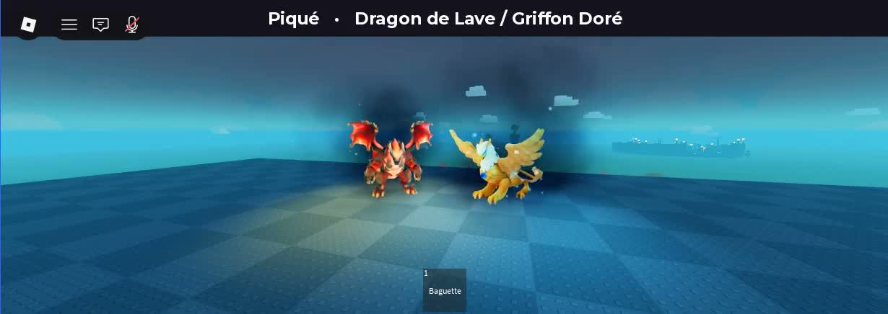
Piqué
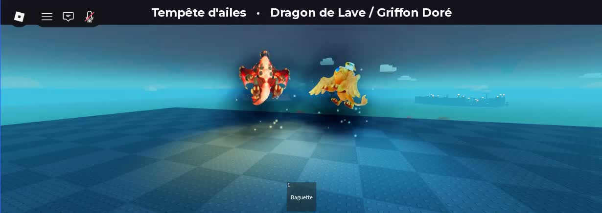
Tempête d'ailes
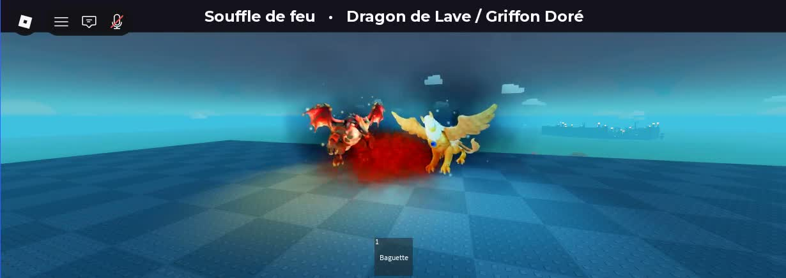
Souffle de feu
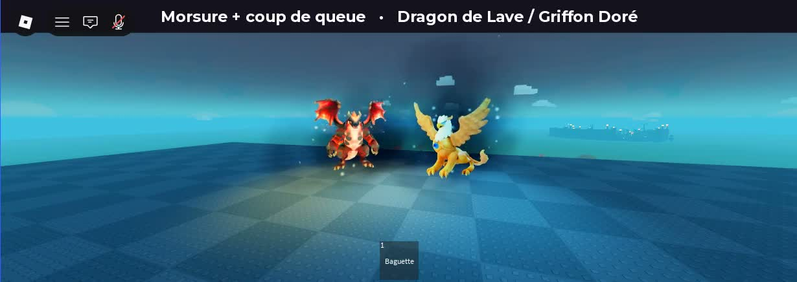
Morsure + coup de queue
Vidéo fluide (21 s, 30 images/s, filmée en jeu à 70 % de la vitesse) : les 5 attaques en boucle, Yéti Géant à gauche et Dragon de Lave à droite
| Attaque (jeu) | Bipède | Dragon / griffon |
|---|---|---|
| Frappe au sol (Slam) | Lève les deux poings au-dessus de la tête, buste cambré, puis les abat au sol en se pliant, genoux fléchis | Se cabre, pattes avant et ailes levées, puis retombe, pattes avant au sol, tête basse, ailes rabattues |
| Onde de choc (Stomp) | S'accroupit, saute bras levés, retombe accroupi, bras écartés | Rugit ailes grandes ouvertes, puis donne un grand battement vers le bas |
| Projectiles (Pumpkins / Barrage) | Trois lancers en alternant les bras, épaules qui tournent | Souffle : tête rejetée en arrière, puis cou tendu qui balaie la zone |
| Balayage (Sweep) | Buste vrillé, bras armé sur le côté, puis grand revers | Coup de queue : queue armée d'un côté, puis fouet de l'autre |
| Racines / geysers (Thorns) | Bras levés, puis poings plantés dans le sol, à genoux | Se cabre, puis plante ses griffes, tête au sol |
| Mort | Titube, puis tombe à genoux (bipède) ou s'effondre, ailes qui retombent (dragon) | |
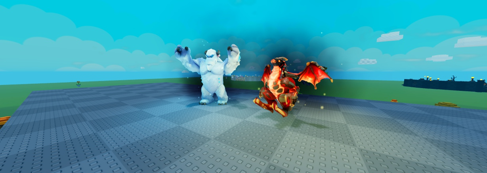
Frappe au sol : préparation (poings levés / dragon cabré)
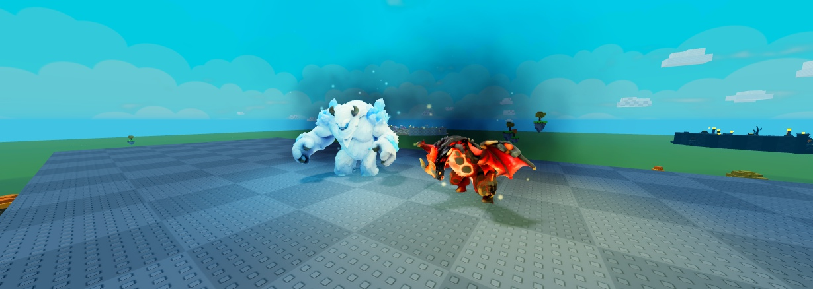
Frappe au sol : impact
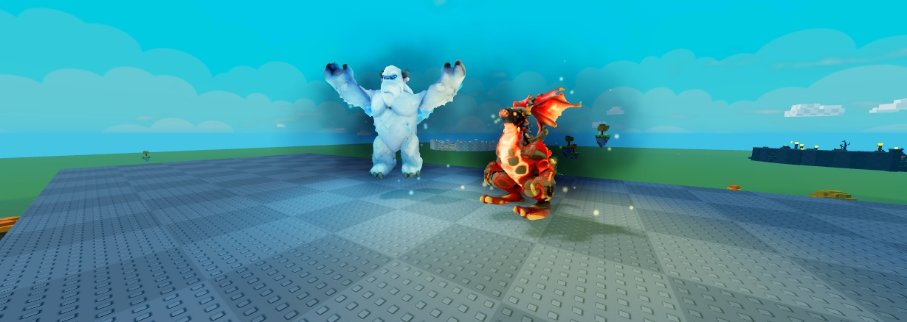
Onde de choc : en l'air / rugissement ailes ouvertes
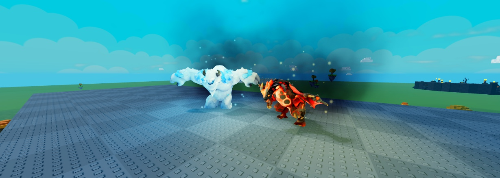
Onde de choc : réception / battement
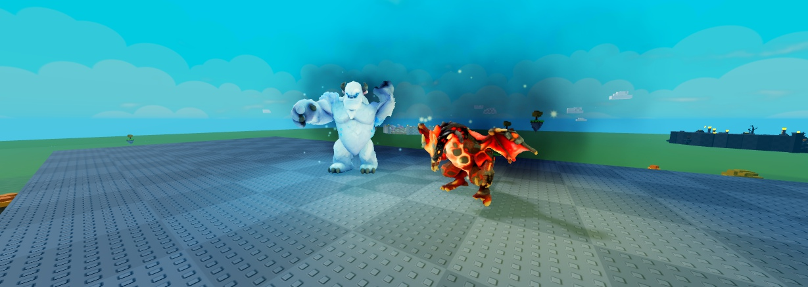
Projectiles : lancer / souffle
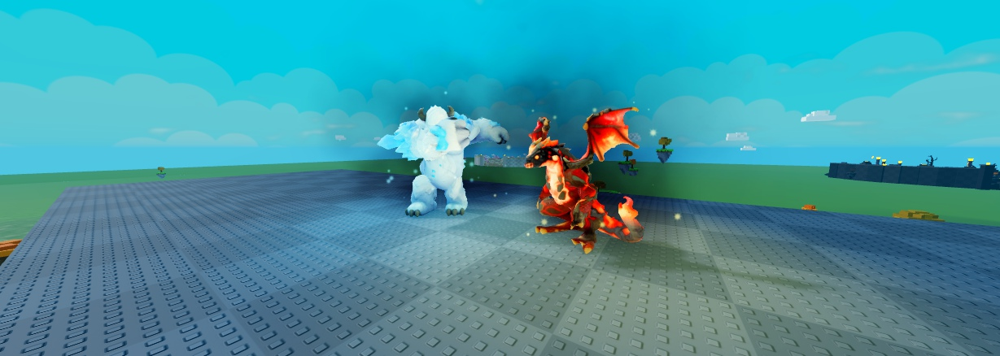
Balayage / coup de queue
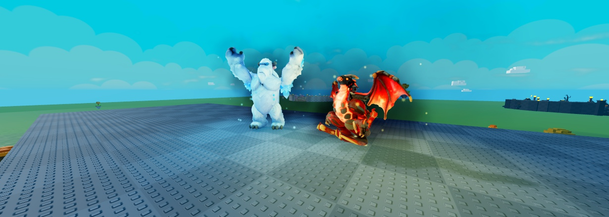
Racines : bras levés
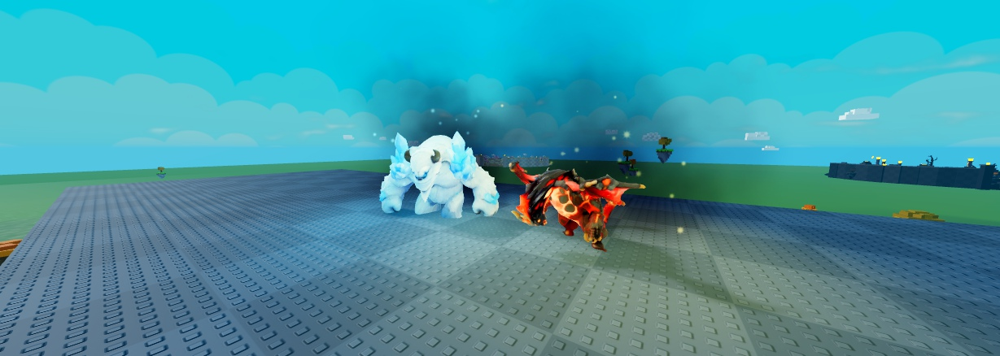
Racines : poings et griffes plantés